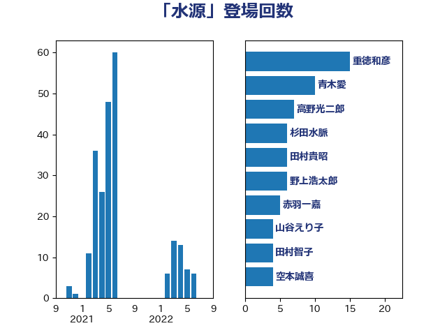

単語「水源」

| 重徳和彦 | 立憲民主党 | 15 回 |
| 青木愛 | 立憲民主党 | 10 回 |
| 高野光二郎 | 自由民主党 | 7 回 |
| 杉田水脈 | 自由民主党 | 6 回 |
| 田村貴昭 | 日本共産党 | 6 回 |
| 野上浩太郎 | 自由民主党 | 6 回 |
| 赤羽一嘉 | 公明党 | 5 回 |
| 山谷えり子 | 自由民主党 | 4 回 |
| 田村智子 | 日本共産党 | 4 回 |
| 空本誠喜 | 日本維新の会 | 4 回 |
| 森山浩行 | 立憲民主党 | 3 回 |
| 横沢高徳 | 立憲民主党 | 3 回 |
| 舟山康江 | 国民民主党 | 3 回 |
| 赤嶺政賢 | 日本共産党 | 3 回 |
| 中谷真一 | 自由民主党 | 2 回 |
| 嘉田由紀子 | 無所属 | 2 回 |
| 大塚耕平 | 国民民主党 | 2 回 |
| 寺田静 | 無所属 | 2 回 |
| 小宮山泰子 | 立憲民主党 | 2 回 |
| 清水貴之 | 日本維新の会 | 2 回 |
| 石川博崇 | 公明党 | 2 回 |
| あかま二郎 | 自由民主党 | 1 回 |
| 伊波洋一 | 無所属 | 1 回 |
| 勝俣孝明 | 自由民主党 | 1 回 |
| 勝部賢志 | 立憲民主党 | 1 回 |
| 吉田宣弘 | 公明党 | 1 回 |
| 吉田統彦 | 立憲民主党 | 1 回 |
| 和田政宗 | 自由民主党 | 1 回 |
| 和田有一朗 | 日本維新の会 | 1 回 |
| 和田義明 | 自由民主党 | 1 回 |
| 大西英男 | 自由民主党 | 1 回 |
| 宮内秀樹 | 自由民主党 | 1 回 |
| 小沼巧 | 立憲民主党 | 1 回 |
| 山口壯 | 自由民主党 | 1 回 |
| 岩渕友 | 日本共産党 | 1 回 |
| 岸田文雄 | 自由民主党 | 1 回 |
| 徳永エリ | 立憲民主党 | 1 回 |
| 斉藤鉄夫 | 公明党 | 1 回 |
| 杉本和巳 | 日本維新の会 | 1 回 |
| 枝野幸男 | 立憲民主党 | 1 回 |
| 柴田巧 | 日本維新の会 | 1 回 |
| 梅村みずほ | 日本維新の会 | 1 回 |
| 森本真治 | 立憲民主党 | 1 回 |
| 池畑浩太朗 | 日本維新の会 | 1 回 |
| 浅田均 | 日本維新の会 | 1 回 |
| 浦野靖人 | 日本維新の会 | 1 回 |
| 渡辺周 | 立憲民主党 | 1 回 |
| 源馬謙太郎 | 立憲民主党 | 1 回 |
| 田名部匡代 | 立憲民主党 | 1 回 |
| 穀田恵二 | 日本共産党 | 1 回 |
| 笠井亮 | 日本共産党 | 1 回 |
| 篠原豪 | 立憲民主党 | 1 回 |
| 羽田次郎 | 立憲民主党 | 1 回 |
| 舞立昇治 | 自由民主党 | 1 回 |
| 赤澤亮正 | 自由民主党 | 1 回 |
| 足立康史 | 日本維新の会 | 1 回 |
| 輿水恵一 | 公明党 | 1 回 |
| 阿部知子 | 立憲民主党 | 1 回 |
| 高木かおり | 日本維新の会 | 1 回 |
| 高橋千鶴子 | 日本共産党 | 1 回 |